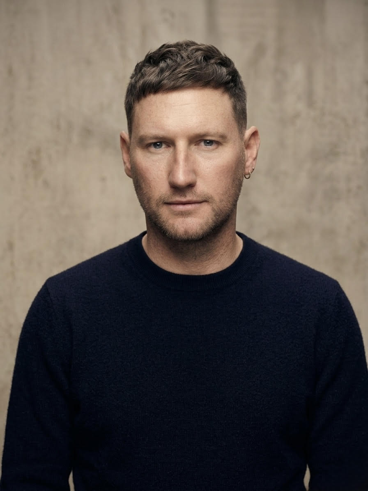

The Factors of Career Choice was not built in a boardroom or a business school. It was built across decades of clinical practice, academic research, and deeply personal conversations between a father and a son trying to make sense of how people actually make the choices that define their lives.

Tyler Blackwell's career is itself a living argument for the Factors of Career Choice framework. It is not linear. It does not follow a single industry or a single discipline. It follows a person who has spent two decades trying to understand how human systems work and what makes people thrive inside them.
He began at the U.S. State Department as a Presidential Management Fellow, working on Israeli-Palestinian affairs under Ambassador David Hale with a Top Secret/SCI clearance. At Sewanee, he wrote his undergraduate thesis on Patrice Lumumba. At the University of Chicago, where he earned an MA in Arabic and Middle Eastern Studies and an Executive Program in Leadership degree from Booth, his graduate work turned to Abd al-Qadir Al-Jazai'ri. He also holds a certification in behavioral science from MIT and a change management certification from Prosci.
From diplomacy he moved to education, leading executive functions at Chicago Public Schools. From there to management consulting at Kincentric and EY, focused on organizational design and capability development. He is currently Director of Global Workforce Planning at Morningstar, building a strategic, data-driven, and human-centered workforce planning capability across Morningstar and PitchBook.
Alongside that work, Tyler is building Wit, an enterprise workforce intelligence platform, and Layers Not Linear, a Substack newsletter at the intersection of behavioral science, labor economics, geopolitics, and career design.
The Factors of Career Choice framework began in 2016 and 2017 as a tool Tyler used in coaching conversations. Over nearly a decade of refinement, shaped by hundreds of real career conversations and deepened by ongoing collaboration with his father, it became the most coherent and research-grounded framework he knows for how people actually make the choices that define their working lives.
Dr. Richard Blackwell has spent more than fifty years sitting with people in some of the most difficult moments of their lives. A psychologist, a life coach, a former hospital chaplain, a therapist, and a teacher, he is also Tyler's father and the intellectual foundation on which much of this framework rests.
His life has been as non-linear as the framework he helped build. He grew up in Winston-Salem, North Carolina, where as a boy he met John F. Kennedy during a campaign visit. As a young man he stood on the National Mall and heard Martin Luther King Jr. deliver the "I Have a Dream" speech. He protested the Vietnam War. At a retreat in New England in the 1970s he found himself in conversation with some of the most consequential psychologists of the twentieth century, including members of Carl Jung's circle.
He earned a bachelor's in business from UNC-Chapel Hill, an M.Div. from Duke Divinity School, and a Ph.D. in psychology from UNC-Chapel Hill. He has been a pastor, a hospital chaplain, a cancer family therapist in Charlotte, a psychologist in private practice, faculty at UC-Irvine, UNC-Charlotte, and several other institutions, and in recent years a life coach.
He is a voracious reader, a brilliant synthesizer of ideas across disciplines, and a natural storyteller who can take fifty years of clinical observation and make it feel like a conversation over coffee. The three-family framework — family of origin, family of choice, and family of work — is his contribution to the Factors of Career Choice. So is the core conviction that career planning and life planning are the same thing.
The Factors of Career Choice framework began with a simple observation: most career tools ask what you want to do. Very few ask who you are, what shaped you, and whether the choices you are making are actually yours.
The framework identifies seven factors that shape every significant career decision a person makes. Some are about raw material — what you were born oriented toward, what you have built, what draws your attention. Some are about deeper influences — your values, the families that handed you your first map of the world. Some are about direction and timing — where you are going, and what this specific moment of your life requires.
None of the factors is static. All of them change across a life. The framework is not a one-time diagnostic. It is a template to return to — when something shifts, when you feel stuck, when a life transition changes what is possible or necessary. Career planning equals life planning equals career planning.
The Factors of Career Choice framework draws on a substantial body of research across vocational psychology, career development theory, clinical psychology, and behavioral science. The framework was designed to make that research accessible and actionable in real career conversations.
The Factors of Career Choice experience is a career and life reflection tool grounded in behavioral science and vocational psychology. It is designed to help people think more clearly and honestly about the factors that shape their career choices.
The Factors of Career Choice experience is not therapy, counseling, psychological treatment, or a substitute for a licensed mental health professional. Tyler Blackwell is a workforce strategist and career coach. Dr. Richard Blackwell is a psychologist and life coach. Neither the tool nor its creators are providing clinical mental health services through this platform.
The AI coach within this tool is powered by large language model technology. It is not a licensed therapist, psychologist, counselor, or mental health professional of any kind. Its reflections are intended to support self-examination and career clarity — not to diagnose, treat, or provide mental health care.
If you are experiencing significant emotional distress, depression, anxiety, grief, trauma, or any mental health challenge, seeking support from a qualified mental health professional is strongly encouraged. The conversations you have in this tool are not a substitute for that support.
If you are in crisis or having thoughts of harming yourself or others:
Call or text 988 — Suicide and Crisis Lifeline (US) — available 24 hours a day, 7 days a week.
Text HOME to 741741 — Crisis Text Line — free, confidential, 24/7.
Call 911 or go to your nearest emergency room if you are in immediate danger.
International resources: findahelpline.com